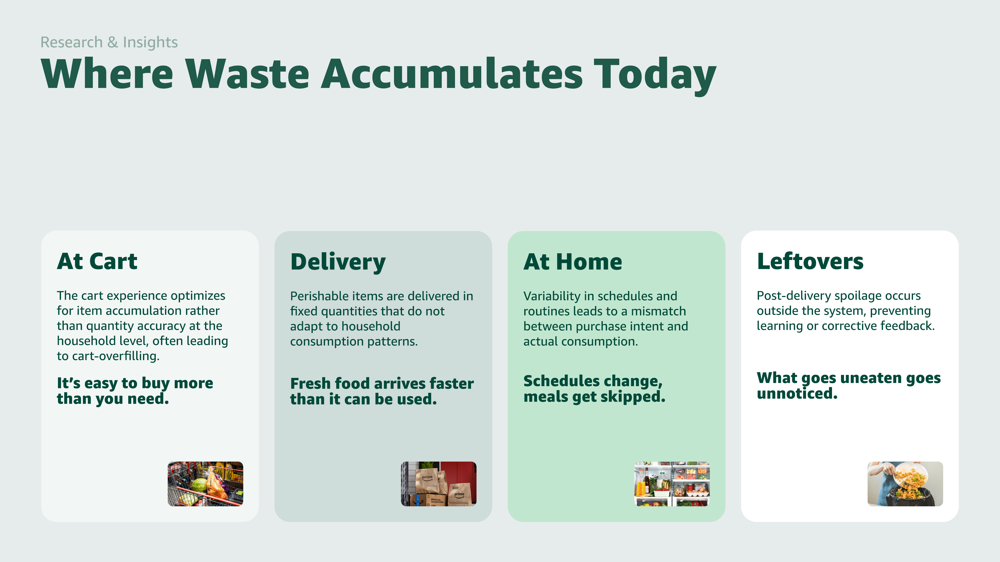
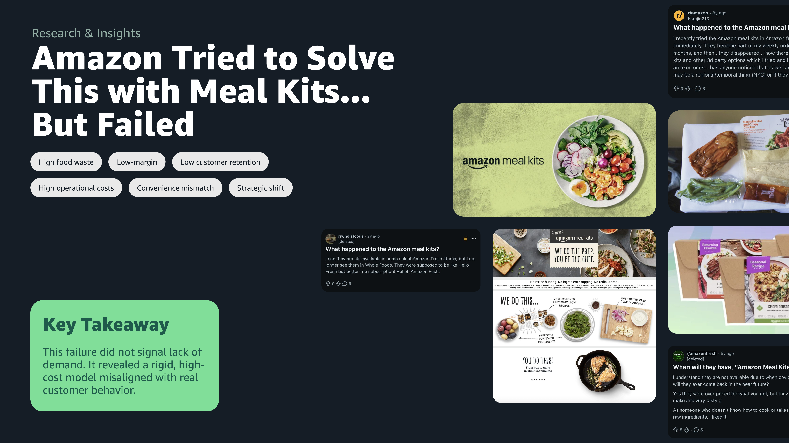
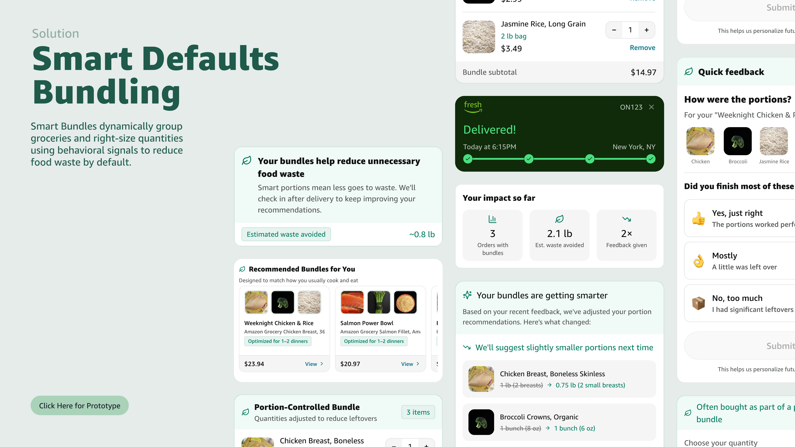
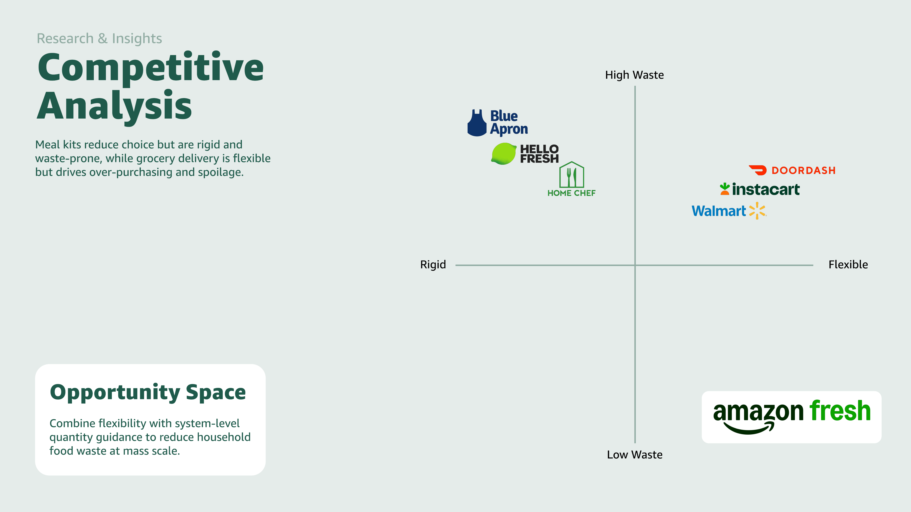
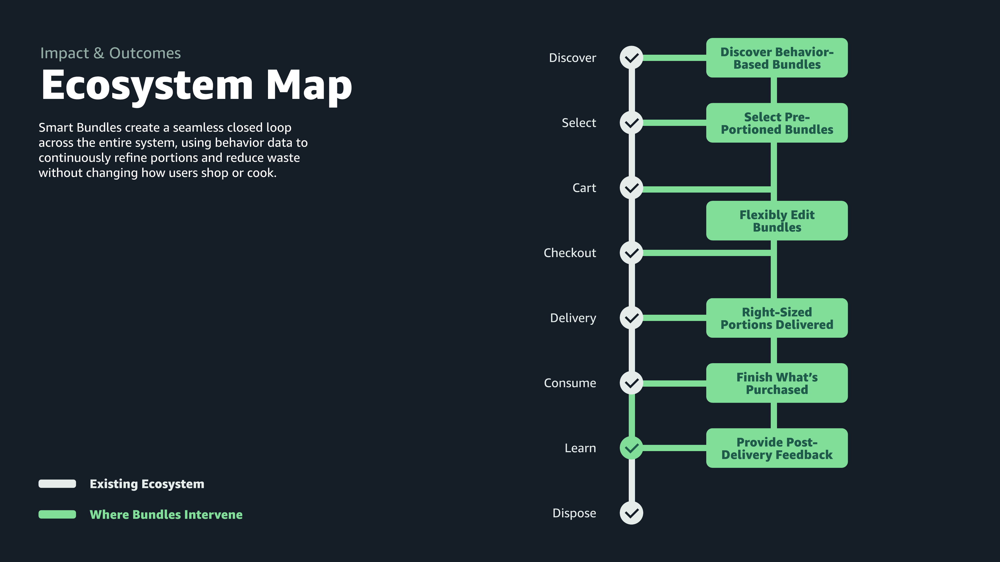

Amazon Fresh · Product Design · 24hr Challenge · 2026
Right-sizing groceries to match real consumption
A system-level intervention for Amazon Fresh that reduces household food waste by adjusting grocery quantities before waste enters the home.
Overview
Grocery systems optimize what people buy — not what they eat
Online grocery optimizes for convenience and volume, but household food waste happens after delivery — outside the system's visibility.


How might we shift grocery systems from optimizing purchases to optimizing real consumption?
Solution
Smart Bundles: right-sizing groceries to match real consumption
Smart Bundles dynamically groups groceries and right-sizes quantities using behavioral signals from purchase history and cart behavior.

Behavior-based bundles
I grouped ingredients into complete-use sets based on what each household actually buys and how they combine items across orders.
Right-sized quantities
I designed the system to suggest smaller portions when purchase history signals over-buy. Every quantity is editable in one step — it adapts, never enforces.
Learning loop
I closed the loop with optional post-delivery feedback, letting recommendations calibrate to each household across orders with near-zero effort.
Core Flows
Four touchpoints. One closed loop.
Four touchpoints to prove the concept end-to-end — discovery, cart, delivery, and post-delivery feedback.
Discover bundles by default
I surfaced behavior-based bundles across Home, bundle, and product pages without replacing the normal shopping experience.
Keep bundle logic through checkout
I kept grouped items editable in cart so users can adjust quantities without breaking the recommendation model.
Deliver the right amount
Right-sized portions arrive at the door, reducing waste before food ever reaches the fridge.
Improve with lightweight feedback
I added an optional post-delivery prompt so the system can tune future bundle sizes with minimal user effort.
Pivot
Meal kits solved planning — but created rigidity
I initially explored meal kits as a direction, but Amazon had already attempted this model and discontinued it due to rigidity, cost, and behavior mismatch.
Why meal kits failed
Rigid
Fixed recipes and quantities left no room for households with different schedules, preferences, or consumption rates.
High cost
Per-meal pricing created a premium barrier that couldn't compete with the flexibility and economy of standard grocery.
Low retention
Customers churned when real life diverged from planned meals — the model demanded behavior change instead of adapting to it.
Pivot
Instead of replacing grocery shopping, I shifted defaults within the existing behavior — making the system more accurate over time without changing how people shop.

System Thinking
One system across the grocery lifecycle
I designed bundles as a closed loop — connecting discovery, cart behavior, and post-delivery feedback into one system that improves across orders.

Impact
Reducing waste through smarter defaults
User
Right portions arrive without requiring meal planning or extra effort — less waste, less regret, and a grocery experience that improves across orders.
Climate
Fewer emissions from food that was produced, transported, and disposed of without being eaten. Waste reduction at the household level is a real climate lever.
Business
Lower spoilage and returns. Higher trust, retention, and LTV from coherent baskets that actually get used — aligning platform incentives with climate outcomes.
Reflection
What the sprint sharpened.
01
Time pressure forced system-first thinking.
10 hours meant designing proof of a thesis, not a gallery of screens. My minimum viable proof was a closed loop — every screen decision followed from that constraint.
02
Killing a tempting direction clarified the product.
Prototyping the meal-delivery add-on early showed me it was the weaker path. Amazon had already discontinued a similar model — the real opportunity was smarter defaults inside the grocery flow that already exists at scale.